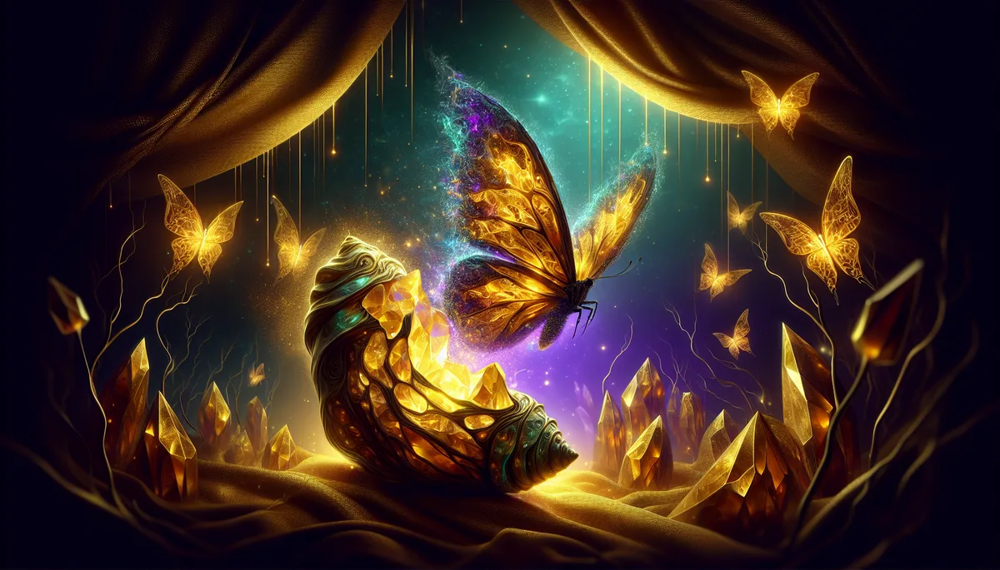

INNER TRANSFORMATION
🩹
您的內在小孩，幾歲了？
每個大人裡面都住著一個小孩。那個小孩在某個時刻被鎖起來了。
20 題，找到那個被鎖起來的房間。
🔮 20 題 · 約 5 分鐘 · 馥靈之鑰獨家
第 1 題
0%
走進密室 🩹
✦ H.O.U.R. 四軸覺察雷達
📋 完整覺察報告
📋 複製完整報告（可貼給 AI 深度分析）
📥 儲存圖片
🧵 分享到 Threads
📋 複製摘要
💬 分享到 LINE
🔄 重新測一次
✨ 更多覺察深潛
🌳
家族星圖
💕
關係羅盤
🤲
自我慈悲
🎭
冒牌者症候群